Dokumentation zum Zahlungsmodul Amazon Pay V2 für die deutsche Zen Cart Version 1.5.7f

Sinn und Zweck
Mit diesem Modul wird Zahlung via Amazon Pay im Shop integriert.
Kunden können direkt mit ihrem Amazon Konto einloggen und dann die in ihrem Amazon Account hinterlegte Zahlungsart verwenden.
Dieses Modul verwendet Amazon Pay Checkout V2 und unterstützt die SCA (Strong Customer Authentication).
Es werden keinerlei Daten zu den bestellten Artikeln an Amazon übermittelt, lediglich der Bestellbetrag für die Zahlungsabwicklung
Voraussetzungen:
- Freigeschalteter Amazon Seller Account in EU oder UK
- Konfiguration der erforderlichen API Keys im Seller Account (siehe Vorbereitungen)
- Zen Cart 1.5.7f deutsche Version
- Shop verwendet durchgehend https
- PHP mindestens 7.4.x, empfohlen 8.0.x
Features:
- Zahlungen werden sofort autorisiert und eingezogen (capture)
- Zahlungen können bei Bedarf via Shopadministration rückerstattet werden (ähnlich wie bei der PayPal Express Integration)
- komplette Sandbox Unterstützung, so dass alles im Sandbox Modus getestet werden kann
- getrennter Checkout für Amazon Pay und normale Zahlungsarten um möglichst wenig in die bestehende Funktionalität einzugreifen
- Verwendung des aktuellen Amazon Pay API SDK PHP 2.6.1
- Übersicht der Amazon Pay Transaktionen filterbar nach Status in der Zen Cart Administration
- Kennzeichnung in der Kundenübersicht ob ein Kundenkonto normal im Shop oder automatisch via Amazon Pay erstellt wurde
- Unterstützung von Zen Cart Gutscheinguthaben und Aktionskupons Funktionalität
- Unterstützung von Downloadartikeln
Copyright, Lizenz, Credits
Copyright
(c) 2023 webchills (www.webchills.at)
Portions Copyright (c) 2003-2023 Zen Cart
Lizenz:
This contribution is subject to version 3.0 of the GPL license available through the world-wide-web at the following url:
http://www.zen-cart-pro.at/license/3_0.txt
Dieses Modul ist DONATIONWARE
Wenn Sie es in Ihrem Zen Cart Shop verwenden, spenden Sie für die Weiterentwicklung der deutschen Zen Cart Version hier:
https://spenden.zen-cart-pro.at
Credits:
Dieses Modul basiert auf dem Amazon Pay Modul für modified von AlkimMedia (www.alkim.de)
Grundlage war das entsprechende Github Repository:
https://github.com/AlkimMedia/AmazonPay_Modified_2060
Vorbereitungen bei Amazon
Bevor Sie dieses Modul installieren können, nehmen Sie zunächst grundlegende wichtige Einstellungen in Ihrem Amazon Seller Central Account vor. Loggen Sie sich also zunächst in Ihren Account ein auf:
https://sellercentral-europe.amazon.com/home
Dort gibt es getrennte Umgebungen für Sandbox und Produktivsystem.
Wählen Sie zunächst "Amazon Pay Sandbox Ansicht"
Führen Sie die folgende Schritte vollständig durch:
I SANDBOX
1) Client-ID-/Store-ID-Konfigurationen anlegen/verwalten
Gehen Sie in der Sandbox Ansicht auf Konfiguration > Client-ID/Store-ID
Falls Sie noch keine Konfiguration (App) für Ihren Shop angelegt haben, gehen Sie auf Neue Konfiguration erstellen:
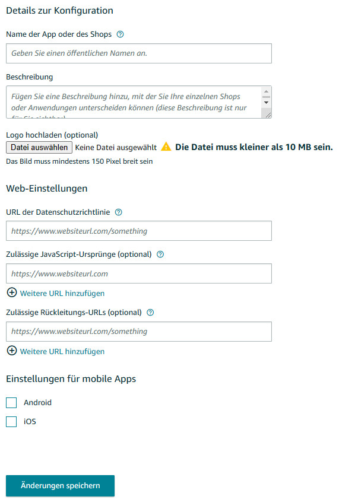
Hier füllen Sie die folgenden Punkte wie folgt aus:
(In diesen Beispielen wird als Shopadresse https://www.meinshop.de verwendet, ersetzen Sie das mit Ihrer echten Adresse
Name der App oder des Shops:
Geben Sie den Namen Ihres Shops ein
Logo hochladen:
Laden Sie ein Logo hoch, das dann später in den Amazon Popups angezeigt wird
URL der Datenschutzrichtlinie:
Die Datenschutzseite Ihres Zen Cart Shops hat in der Regel folgende
Adresse:
https://www.meinshop.de/index.php?main_page=privacy
Zulässige Javascript Ursprünge:
Tragen Sie hier die URL ein, auf der Ihr Shop läuft, z.B.
https://www.meinshop.de
Die restlichen Felder lassen Sie leer.
Mit Änderungen speichern übernehmen.
Falls Sie früher schon mal eine ältere Version eines Amazon Pay Moduls verwendet haben, haben Sie eine solche Konfiguration möglicherweise früher schonmal angelegt.
Prüfen Sie Ihre Konfiguration nun nochmal, es sollte nun so aussehen und Ihnen wird Ihre Client ID / Store ID angezeigt:
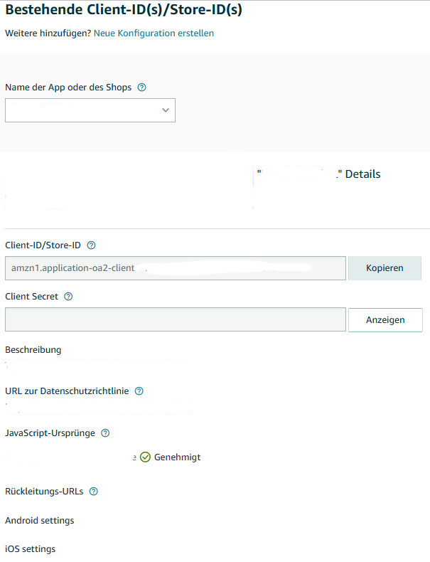
Kopieren Sie sich die Client-ID/Store-ID in eine Textdatei, Sie müssen diese ID später in Ihrem Zen Cart Shop hinterlegen.
2) API Anmeldedaten für Sandbox erstellen in Integration Central
Gehen Sie nun (weiterhin in der Sandbox Ansicht) auf Integration Central.
Wählen Sie bei E-Commerce Anbieter oder Integrationstyp:
Selbst entwickelt
Wählen Sie bei Zahlungstyp:
Einmalzahlung
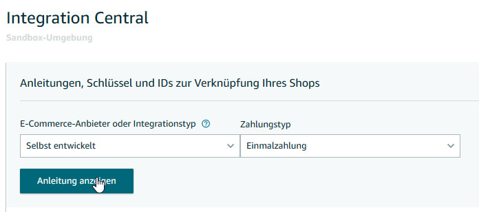
Clicken Sie auf Anleitung anzeigen.
Unter Shop Name wählen Sie Ihren zuvor angelegten Shop aus dem Dropdownmenü.
Rechts wird Ihnen Ihre Händler-ID angezeigt, kopieren Sie sie ebenfalls in Ihre Textdatei, Sie müssen sie später in Ihrem Zen Cart Shop hinterlegen.
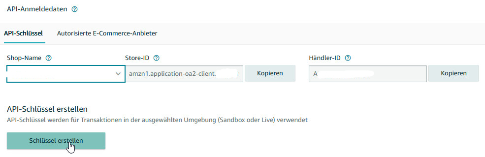
Clicken Sie nun auf Schlüssel erstellen.
Im nächsten Fenster wählen Sie die obere Option API-Anmeldeinformationen generieren:
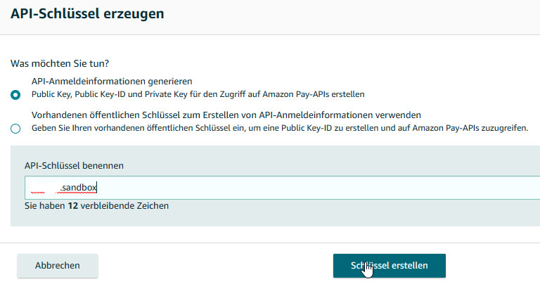
Geben Sie dem Schlüssel einen Namen, der für Sie Sinn macht, z.B. meinshopsandbox
Clicken Sie dann auf Schlüssel erstellen.
Der Schlüssel wird Ihnen wie folgt angezeigt:
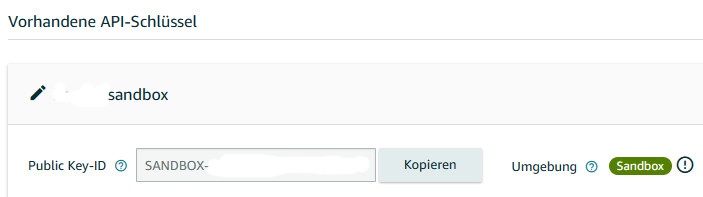
Da es sich um einen Sandbox Schlüssel handelt beginnt die Public Key ID mit SANDBOX-
Kopieren Sie sich die Public-Key-ID wieder in Ihre Textdatei, Sie müssen Sie später in Ihrem Zen Cart Shop hinterlegen.
Beim Erstellen des Schlüssel hat der Download einer Zertifikatsdatei namens z.B. AmazonPay_SANDBOX-ABC123ABC123ABC.pem
gestartet.
Gehen Sie also nun in Ihren Download Ordner, dort sollte sich diese .pem Datei nun befinden.
Benennen Sie diese Datei nun um von AmazonPay_SANDBOX-ABC123ABC123ABC.pem auf exakt folgenden Namen:
private-SANDBOX.pem
Sie müssen diese Datei später per FTP in Ihren Zen Cart Shop hochladen.
Damit haben Sie nun schon einmal Ihre Sandbox Umgebung fertig vorbereitet.
Nun machen Sie dasselbe nochmal für Ihre Live Umgebung
II LIVE
3) API Anmeldedaten für Live erstellen in Integration Central
Schalten Sie nun oben links von Sandbox Ansicht auf Amazon Pay Produktionsansicht um:
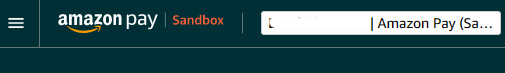
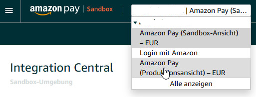
Dort gehen Sie auf den Link Integration Central:
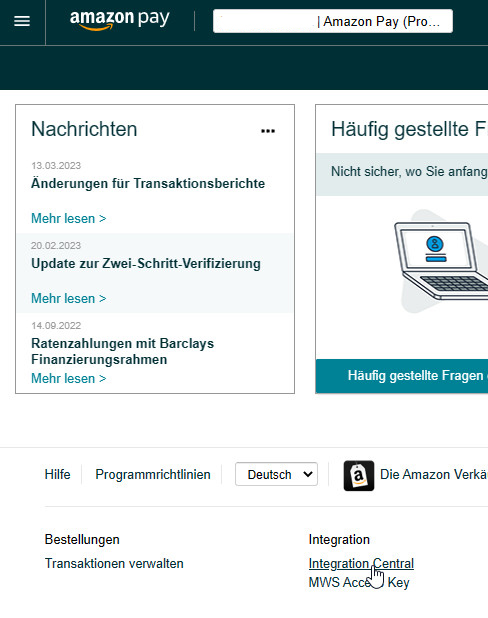
Dort erstellen Sie nun genau wie vorher Ihre API Keys für den Livebetrieb:
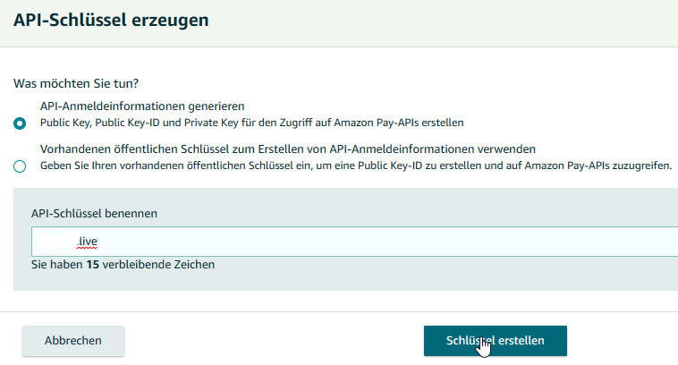
Nennen Sie den Schlüssel diesmal z.B. meinshoplive
Nach der Erstellung wird Ihnen die Public Key ID für den Livebetrieb angezeigt, sie beginnt diesmal mit LIVE-:
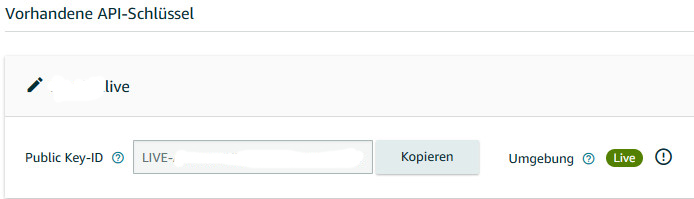
Kopieren Sie sich auch diese Public Key ID in Ihre Textdatei, Sie müssen Sie später in Ihrem Zen Cart Shop hinterlegen.
Auch bei dieser Key Erstellung hat wieder eine Download einer Zertifikatsdatei stattgefunden namens z.B.
AmazonPay_LIVE-ABC123ABC123ABC.pem
Gehen Sie wieder in Ihren Download Ordner.
Benennen Sie diese Datei nun um von AmazonPay_LIVE-ABC123ABC123ABC.pem auf exakt folgenden Namen:
private-LIVE.pem
Sie müssen diese Datei später per FTP in Ihren Zen Cart Shop hochladen.
Nun sind Sie in Ihrem Seller Central Account fertig und sollten nun Folgendes zur Hand haben:
Eine Textdatei mit:
Händler ID
Shop ID
Public Key ID für Sandbox
Public Key ID für Live
Zwei Zertifikatsdateien:
private-SANDBOX.pem
private-LIVE.pem
Nun können Sie das Modul in Ihrem Shop wie unter Installation beschrieben installieren.
Installation
Voraussetzungen
Dieses Modul ist nur für Zen Cart 1.5.7f deutsch geeignet.
Der Shop muss durchgehend https verwenden.
Dieses Modul ist DONATIONWARE
Wenn Sie es in Ihrem Zen Cart Shop verwenden, spenden Sie für die Weiterentwicklung der deutschen Zen Cart Version hier:
https://spenden.zen-cart-pro.at
WICHTIG:
Für den Einbau dieses Moduls sollten Sie über folgende Werkzeuge verfügen:
1) Ein guter Texteditor.
Damit ist nicht das in Windows enthaltene Notepad oder Microsoft Word gemeint.
Sie benötigen einen Texteditor, der utf-8 versteht und auch im Format utf-8 ohne BOM abspeichern kann.
Meine Empfehlung: UltraEdit (kostenlose 30 Tage Testversion verfügbar)
Ebenfalls gut geeignet ist der kostenlose Texteditor Notepad++
2) Ein Tool zum Vergleichen von Dateien
Bei der Installation dieses Moduls ist es erforderlich, dass Sie den Inhalt einiger Ihrer bestehenden Zen Cart Dateien mit dem Inhalt der neuen Moduldateien vergleichen und die Änderungen zusammenführen ("mergen").
Meine Empfehlung: BeyondCompare (kostenlose 30 Tage Testversion verfügbar)
Ebenfalls gut geeignet ist das kostenlose Programm WinMerge
Empfehlung:
Dieses Modul erst in einem Testsystem einbauen und dort konfigurieren/testen und endgültig an die eigenen Wünsche anpassen. Erst dann in einem Liveshop einsetzen! Sichern Sie unbedingt alle Dateien Ihres Shops per FTP und sichern Sie die Datenbank mit phpMyAdmin oder anderen geeigneten Tools!
WICHTIG
Vor dem Einbau dieser Änderungen:
BACKUP von Shop und Datenbank machen!
Keine Haftung, Verwendung auf eigene Gefahr!
BACKUP gemacht? Ok, dann weiterlesen...
Die Installation erfolgt in folgenden Schritten. Halten Sie diesen Ablauf ein!
1)
Im Ordner NEUE DATEIEN alle Ordner namens DEINTEMPLATE auf das im Shop verwendete Template umbennen (z.B. responsive_classic).
Den Ordner DEINADMIN auf den Namen Ihres admin Verzeichnisses umbenennen.
2)
In die Zen Cart Administration einloggen.
Schalten Sie den Shop unter Konfiguration > Shopwartung in den Wartungsmodus.
3)
Überprüfen Sie nun erst nochmal ob Sie wirklich in Schritt 1 die Ordner in NEUE DATEIEN entsprechend umbenannt haben.
Ja?
Dann nun alle Dateien/Ordner aus dem Ordner NEUE DATEIEN in der vorgegebenen Struktur in die Zen Cart Installation hochladen.
Dabei werden keine bestehende Dateien überschrieben.
4)
In der Zen Cart Administration auf irgendeinen Menüpunkt clicken. Sie sollten oben grüne Erfolgsmeldungen sehen und unter Konfiguration ist nun der neue Menüpunkt "Amazon Pay V2 Grundeinstellungen" vorhanden.
Unter Kunden ist der neue Menüpunkt "Amazon Pay V2 Transaktionen" vorhanden.
5)
Laden Sie nun Ihre unter Vorbereitung generierten beiden Zertifikatsdateien hoch:
private-SANDBOX.pem
und
private-LIVE.pem
Laden Sie beide in exakt dieses Verzeichnis Ihres Shops hoch:
includes/modules/payment/amazon_pay_v2/keys
Dort befinden sich bereits 2 Dummy Dateien mit demselben Namen, überschreiben Sie sie.
6)
Geben Sie nun mit Ihrem FTP Programm den folgenden beiden Ordnern Schreibrechte (chmod 777):
cache/amazon_pay_v2
includes/modules/payment/amazon_pay_v2/logs
7)
Im Ordner GEAENDERTE DATEIEN alle Ordner namens DEINTEMPLATE auf das im Shop verwendete Template umbennen.
Falls Sie das responsive Standardtemplate responsive_classic aktiv haben, verwenden Sie stattdessen die Dateien im Ordner DEINTEMPLATE_RESPONSIVE.
Den Ordner DEINADMIN auf den Namen Ihres admin Verzeichnisses umbenennen.
Wenn Sie Zen Cart 1.5.7 gerade frisch installiert haben und noch keinerlei Änderungen an den Dateien vorgenommen haben, können Sie nun alle Dateien/Ordner aus dem Ordner GEAENDERTE DATEIEN in der vorgegebenen Struktur in die Zen Cart Installation hochladen. Dabei werden dann etliche Dateien überschrieben.
Wenn Sie Zen Cart 1.5.7 schon länger im Einsatz haben und schon einmal Änderungen an Dateien vorgenommen oder andere Module eingebaut haben, dann laden Sie die Dateien keinesfalls einfach hoch.
Vergleichen Sie stattdessen alle Dateien im Ordner GEAENDERTE DATEIEN mit den entsprechenden Dateien in Ihrem Shop und nehmen Sie die Änderungen manuell per WinMerge oder BeyondCompare vor.
Dann spielen Sie die geänderten Dateien in der gezeigten Struktur ein.
WICHTIG:
Falls Sie das Modul Bestellen ohne Kundenkonto (COWOA) aktiv haben, verwenden Sie die Dateien im Ordner OPTIONAL/COWOA für das Amazon Pay V2 Modul!
Falls Sie das Modul Datenweitergabe für Versandunternehmen aktiv haben, verwenden Sie die Dateien im Ordner OPTIONAL/DATENWEITERGABE AN VERSANDUNTERNEHMEN für das Amazon Pay V2 Modul!
8)
Nehmen Sie nun unter Konfiguration > Amazon Pay V2 Grundeinstellungen die nötigen Einstellungen vor.
Konfiguration
Dieses Modul ist DONATIONWARE
Wenn Sie es in Ihrem Zen Cart Shop verwenden, spenden Sie für die Weiterentwicklung der deutschen Zen Cart Version hier:
https://spenden.zen-cart-pro.at
Einstellungsmöglichkeiten in der Zen Cart Administration
Unter Konfiguration > Amazon Pay V2 Grundeinstellungen sind folgende Optionen verfügbar:
Stellen Sie all diese Optionen korrekt ein, bevor Sie das Zahlungsmodul unter Module > Zahlungsarten aktivieren
Amazon Pay - Layout Checkout Button
Gold, Dunkelgrau oder Hellgrau
Wählen Sie das gewünschte Aussehen für den Amazon Pay Checkout Button.
Dieser Button erscheint für per Amazon eingeloggte Kunden, um den Checkout zu starten. Er ersetzt für per Amazon eingeloggte Kunden den Button "zur Kasse"
Voreinstellung: Gold
Amazon Pay - Layout Login Button
Gold, Dunkelgrau oder Hellgrau
Wählen Sie das gewünschte Aussehen für den Amazon Pay Login Button.
Dieser Button erscheint im Warenkorb und falls aktiviert in der Warenkorbsidebox sobald ein Artikel im Warenkorb liegt. Ebenso auf der Login Seite.
Voreinstellung: Gold
Amazon Pay - Region
Wählen Sie hier EU (Voreinstellung), außer Ihr Shop befindet sich in Großbritannien
Amazon Pay - IPN URL
Diese URL endet immer exakt so:
ext/modules/payment/amazon_pay_v2/ipn.php
Läuft Ihr Shop also auf
https://www.meinshop.de
Dann tragen Sie hier ein:
https://www.meinshop.de/ext/modules/payment/amazon_pay_v2/ipn.php
Amazon Pay - Referenznummer im Bestellkommentar
Standardmäßig wird die Amazon Pay Referenznummer bei einer Bestellung in den Bestellkommentar übernommen.
Falls Sie das nicht wollen, stellen Sie hier auf false
Amazon Pay - Kundenkonto Willkommensemail senden
Wenn ein Besucher, der mit Amazon Pay einloggt, kein bestehender Kunde ist, wird automatisch im Shop ein Kundenkonto für ihn/sie erstellt, damit die Bestellung abgewickelt werden kann. Möchten Sie die Kunden darüber informieren und ihnen eine Willkommens-E-Mail mit ihren Zugangsdaten schicken? Der Kunde bekommt dann automatisch ein Willkommensmail mit einem zufällig generierten Passwort.
Voreinstellung: true
Falls Sie das nicht wollen, stellen Sie hier auf false
Amazon Pay - Händler ID
Geben Sie hier die Händler ID aus Ihrem Amazon Seller
Central Account ein.
Amazon Pay - Store ID
Geben Sie hier die Store ID aus Ihrem Amazon Seller
Central Account ein.
Amazon Pay - SANDBOX Public Key ID
Geben Sie hier Ihre Amazon Pay Public Key ID für den Sandboxbetrieb ein. Sie beginnt immer mit SANDBOX-
Hinweis:
Sie müssen zusätzlich wie unter Vorbereitungen bei Amazon beschrieben die entsprechende private-SANDBOX.pem Datei hochgeladen haben nach:
includes/modules/payment/amazon_pay_v2/keys
Amazon Pay - LIVE Public Key ID
Geben Sie hier Ihre Amazon Pay Public Key ID für den Livebetrieb ein. Sie beginnt immer mit LIVE-
Hinweis:
Sie müssen zusätzlich wie unter Vorbereitungen bei Amazon beschrieben die entsprechende private-LIVE.pem Datei hochgeladen haben nach:
includes/modules/payment/amazon_pay_v2/keys
Amazon Pay - Token für Cronjob
Sie können später einen Cronjob einrichten, der den aktuellen Status von Amazon Pay Transaktionen automatisch mit Amazon abgleicht und in der Datenbank entsprechend aktualisiert. Das ist vor allem für Rückerstattungen sinnvoll, da deren Status erst nach einiger Zeit auf Refunded wechselt. Um zu verhindern, dass Aufrufe an das Cronjob Script ohne Token erfolgen und damit für DDOS Attacken missbraucht werden können, ist das Script abgesichert und wird nur ausgeführt, wenn dieser Token mitübergeben wird. Genaueres zur Cronjob Konfiguration unter Verwendung.
Alles konfiguriert?
Dann gehen Sie nun auf Module > Zahlungsarten
Wählen Sie das Modul amazon_pay_v2 und clicken Sie auf Installieren.
Stellen Sie Zahlung via Amazon Pay anbieten auf true.
Legen Sie Ihre gewünschten Bestellstati fest.
Die Sortierreihenfolge ist irrelevant, stellen Sie irgendeine Zahl ein, die Sie noch nicht vergeben haben.
Stellen Sie auf Sandbox, um das Modul zunächst im Sandbox Modus zu testen (Sie müssen dazu in Ihrem Amazon Seller Central Account entsprechende Sandbox Testkonten erstellt haben) oder auf Live, um es im Livemodus zu nutzen.
9)
Schalten Sie nun den Wartungsmodus wieder aus und testen Sie die Funktionalität.
Achten Sie darauf, dass Sie aus Ihrem Amazon Seller Central Account ausgeloggt sind, falls Sie die Amazon Pay Funktionalität im selben Browser testen wollen!
Verwendung
Bestellablauf im Frontend
Dieses Modul ist so konzipiert, dass Kunden, die via Amazon einloggen auch mit Amazon Pay bezahlen. Solchen Kunden wird als Zahlungsart automatisch nur Amazon Pay angeboten.
Legt ein Besucher etwas in den Warenkorb erscheint im Warenkorb und falls aktiviert in der Warenkorb Sidebox der Button Login mit Amazon.
Wird der verwendet wird der Besucher zum Amazon Login geleitet und loggt sich dort ein.
Hat diese Emailadresse noch kein Kundenkonto im Shop wird automatisch ein Kundenkonto mit den bei Amazon hinterlegten Kundendaten erstellt.
Das ist anlog zur PayPal Express Funktionalität und erforderlich, um die Bestellung abwickeln zu können.
Dabei wird für das neue Kundenkonto ein zufällig generiertes 8-stelliges Passwort erstellt. Falls aktiviert, bekommt der Kunde ein Willkommensemail mit diesem Passwort, damit er sich später auch normal im Shop einloggen kann, um z.B. den Status der Bestellung zu prüfen.
Hat die Emailadresse bereits ein Kundenkonto im Shop, wird sie normal eingeloggt.
Der Kunde kommt dann auf die Warenkorbseite.
Hier ist der normale Button "zur Kasse" mit dem Amazon Pay Button ersetzt.
Ebenso ist der Link "zur Kasse" im Header mit dem Amazon Pay Button ersetzt.
Anclicken des Amazon Pay Buttons startet dann den Checkout.
Der Kunde kommt auf die Amazon Zahlungsseite und kann hier Lieferadresse und bei Amazon hinterlegte Zahlungsart bei Bedarf ändern.
Nach dieser Bestätigung kommt er in den Shop zurück auf die neue von diesem Modul mitgelieferte Seite checkout_shipping_amazon
Die Lieferadresse wurde hier mit der zuvor bei Amazon gewählten Lieferadresse befüllt.
Hier wählt der Kunde die gewünschte Versandart.
Danach kommt er auf die neue von diesem Modul mitgelieferte Seite checkout_payment_amazon.
Hier muss keine Zahlungsart mehr gewählt werden, es ist automatisch Amazon Pay hinterlegt.
Diese Seite dient dazu, Aktionskupons und Geschenkgutscheinguthaben ganz normal verarbeiten zu können.
Hier befindet sich auch die nötige Zustimmung zu den AGB.
Mit Click auf Weiter kommt der Kunde dann auf die neue von diesem Modul mitgelieferte Seite checkout_confirmation_amazon.
Hier erscheint nochmal die Übersicht der Bestellung.
Die Lieferadresse kann hier nochmals korrigiert werden, beim Anclicken der Buttons dazu öffnet sich wieder die Amazon Seite, wo der Kunde eine andere Lieferadresse aus seinem Adressbuch wählen kann. Oder falls nötig eine andere bei Amazon hinterlegte Zahlungsart.
Mit Click auf Kaufen erscheint nochmals die Amazon Zahlungsseite wo die Zahlung verarbeitet wird.
Hier kann dann auch falls zutreffend die vorgesehene Zwei Faktor Authentifizierungsabfrage (z.B. Codeeingabe in der Smartphone App)
erscheinen.
Ist die Zahlung erfolgreich kommt der Kunde auf die normale checkout_success Seite und die Bestellung wird generiert.
Wird die Zahlung von Amazon Pay abgelehnt oder vom Kunden z.B. durch Nicht Bestätigung der Zwei Faktor Authentifizierung abgebrochen, kommt der Kunde auf die Warenkorbseite wo ein entsprechender Hinweis erscheint.
Es werden bei nicht erfolgreichen Zahlungen keine Bestellungen generiert!
Die speziellen Amazon Pay Checkoutseiten sind genauso gestaltet und mit denselben Funktionalitäten ausgestattet wie die normalen Checkoutseiten in Zen Cart.
Damit werden auch Erweiterungen wie z.B. Zustimmung zur Datenweitergabe an Versandunternehmen unterstützt.
Funktionen in der Administration
Neue Datenbanktabellen
Dieses Modul legt zwei neue Datenbanktabellen an:
amazon_pay_v2_transactions
Hier werden alle Transaktionen gespeichert und ihr Status aktualisiert.
Eine typische Amazon Pay Bestellung hat mindestens 3 Transaktionen unterschiedlicher Typen:
Typ: CheckoutSession > Completed
Typ: ChargePermission > NonChargeable
Typ: Charge > Captured (das ist das wirkliche Einziehen des Betrages
Sollte die Zahlung später rückerstattet werden:
Typ: Refund > RefundInitiated
Wechselt einige Zeit später auf Refunded, sobald Amazon den Betrag wirklich refundiert hat.
amazon_pay_v2_logs
Hier werden die Übermittlungen an die Amazon API protokolliert
Sinnvoll zur Fehlersuche
Transaktionsübersicht unter Kunden > Amazon Pay V2 Transaktionen
Ähnlich wie für Paypal oder Braintree Kreditkartenzahlungen sind die entsprechenden Amazon Pay V2 Transaktionen ersichtlich.
Hier werden die Einträge aus der Tabelle amazon_pay_v2_transactions visualisiert und können nach Status gefiltert werden.
Kennzeichnung unter Kunden > Kunden
In einer neuen Spalte "registriert via" ist ersichtlich, ob es sich um ein via Amazon Pay, PayPal Express oder über die normale Shopregistrierung generiertes Kundenkonto handelt.
Diese Spalte ist auch unter Kunden, die nie etwas bestellt haben, verfügbar.
Im Sinne der DSGVO sollten Sie regelmäßig solche Kundenkonten, die nie etwas bestellt haben, löschen.
Zahlungen rückerstatten
Mit Amazon Pay getätigte Zahlungen können bei Bedarf direkt über die Shopadministration rückerstattet werden.
Ähnlich wie bei PayPal oder Braintree Zahlungen erscheint beim Bearbeiten von mit Amazon Pay bezahlten Bestellungen ein Link für zusätzliche Details:
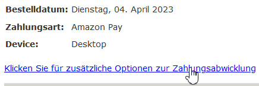
Anclicken liefert die Möglichkeit, die Zahlung zurückzuerstatten:
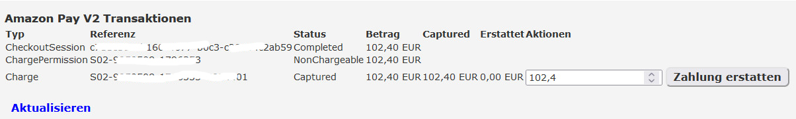
Der höchste zu erstattende Betrag ist bereits vorausgefüllt und kann einfach mit dem Button Zahlung erstattet rückerstattet werden. Soll nur ein Teilbetrag erstattet werden, entsprechend ändern.
Die Bestellung wird dabei automatisch auf den Status gesetzt, den Sie in der Modulkonfiguration eingestellt haben (normalerweise "Storniert" und in die Bestellhistory wird die entsprechende Amazon Referenznummer eingetragen:
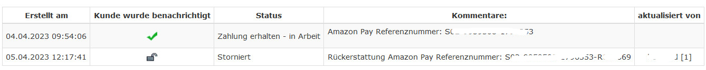
Danach das Menü nochmal aufklappen, es ist nun eine neue Refund Transaktion im Status Refund Initiated ersichtlich:
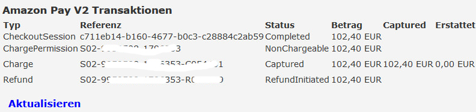
Es kann nun einige Stunden dauern, bis der Status bei Amazon sich auf Refund ändert, da Amazon den Refund nicht sofort durchführt.
Hat sich der Status bei Amazon auf Refund geändert, wird sich der Status in der Shopdatenbank nicht automatisch darauf aktualisiert.
Ein Abgleich erfolgt manuell immer mit dem Link Aktualisieren. Es empfiehlt sich daher vor einer Rückerstattung immer erst den Link Aktualisieren zu verwenden, um einen wirklich aktuellen abgeglichenen Status zu haben.
Der Statusabgleich kann auch mittels Cronjob automatisiert werden, so dass Sie sich darum nicht kümmern müssen:
Cronjob einrichten
tbd
Download
Dieses Modul ist DONATIONWARE
Wenn Sie es in Ihrem Zen Cart Shop verwenden, spenden Sie für die Weiterentwicklung der deutschen Zen Cart Version hier:
https://spenden.zen-cart-pro.at
Dieses Modul steht kostenlos auf Github zum Download bereit.
Freigegebene getestete Versionen für den Einsatz in Livesystemen ausschließlich auf Github unter Releases herunterladen:
https://github.com/zencartpro/157-modul-amazon-pay-v2/releases